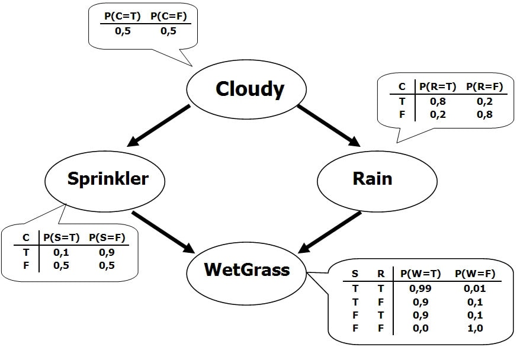
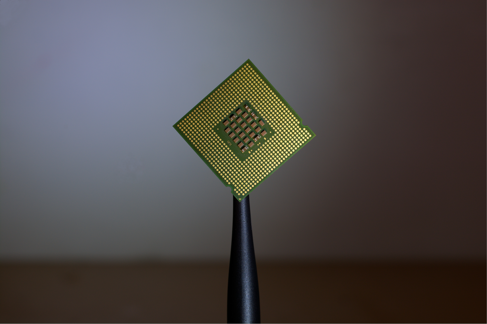

School Projects
An overview of some of the interesting projects I have worked on while pursuing my undergraduate education at UC Berkeley.
Wizard Arrangement
Given a list of wizards and constraints regarding their ordering, implemented a Python program to output a valid ordering in a reasonable amount of time (~ 1.5 hours for 400 wizards/2000 constraints)
Technologies: Python, PyPi
Classification
Implemented both a perceptron as well the Gradient Descent Algorithm in order to produce a basic classifier for handwritten digits. In order to make the classifier have a higher accuracy, I implemented a bread-first search in order to find the number of connected-components of black pixels.
Technologies: Python, TensorFlow

Bayes Nets
In this project for my Introduction to Artificial Intelligence class, I implemented some basic features/functions of Bayes Nets, including variable elimination and value-of-perfect-information calculations.
Technologies: Python

MIPS Loader/Linker
As the title suggests, this was a two part project. The first part dealt with producing a Loader for MIPS in C, and the latter portion was making a Linker in the MIPS Assembly Language
Technologies: C, MIPS
MIPS CPU
This is a 2-Stage Pipelined CPU for the MIPS Assembly Language. The main point of this project was to get introduced to digital design, and so the circuits were made in Logism.
Technologies: Logism

HARBOR on Apache Hadoop
This was a project in which I had to implement a simple database system in JAVA using the HADOOP framework. The main functionalities of this database system include being able to search for a given query by making use of the concept of MapReduce
Technologies: JAVA, HADOOP

Gitlet
This is a simplification of the version-control software Git, which is frequently used in conjunction with web services such as Github and BitBucket in order to make collaboration amongst programmers more efficiently.
Technologies: JAVA

Checkers 61BL
A special version of checkers with special pieces including shields and bombs. Some of the modified rules include that bombs destroy all pieces within one square of their new location after they move, and that shields are immune to the blasts generated by the bombs.
Technologies: JAVA, Swing